Hồ sơ quốc gia
Vương quốc Peace
Trung tâm kinh tế và xã hội của Ionie
Cao trào / BossKhông phải khu vực chiến đấu
Bản sắc chung
Peace là quốc gia trung tâm của lục địa Ionie, phát triển nhờ kiểm soát mạng lưới giao thương nối vùng nông nghiệp Breeze, Thảo Nguyên Gió Hát, Hẻm Núi Pha Lê và Bờ Biển San Hô. Peace không trực tiếp quản lý mọi vùng hoang dã; thay vào đó, vương quốc giao Công Hội Mạo Hiểm Giả bảo vệ đường sá, giải quyết quái vật và hỗ trợ các khu dân cư xa trung tâm.
Bề ngoài, Peace là một xã hội ổn định, lịch thiệp và ít xung đột. Người dân quen giải quyết khó khăn bằng đơn yêu cầu, hợp đồng và nhiệm vụ Công Hội. Tuy nhiên, sự bình yên này cũng khiến nhiều người né tránh bất đồng, xem cảm xúc tiêu cực là điều đáng xấu hổ và dễ chấp nhận lời giải thích đơn giản rằng mọi tai họa đều do Ma Vương gây ra.
Cuộc sống thường ngày
- Buổi sáng bắt đầu bằng tiếng chuông chợ và bảng nhiệm vụ mới tại Công Hội.
- Nông sản từ Breeze, khoáng sản từ Hẻm Núi và hàng biển từ San Hô được vận chuyển qua các trạm thu phí.
- Người dân thường thuê mạo hiểm giả hộ tống khi phải ra ngoài khu dân cư.
- Trẻ em lớn lên cùng những truyện kể về anh hùng đánh bại Ma Vương, nhưng phần lớn xem đó là lịch sử xa xưa.
- Các gia đình coi bữa tối và Tháng Lò Sưởi là thời điểm quan trọng để duy trì sự hòa thuận.
Kiến trúc, văn hóa và kinh tế
- Kiến trúc: Tường đá sáng màu, mái xanh, cửa sổ vòm và huy hiệu chim bồ câu cách điệu. Trạm Công Hội luôn có bảng nhiệm vụ lớn và chuông báo động.
- Trang phục: Màu xanh, trắng và vàng; thương nhân đeo thẻ tuyến đường, mạo hiểm giả đeo huy hiệu cấp bậc.
- Ẩm thực: Bánh mì Breeze, thịt nướng, súp củ, cá muối San Hô và gia vị nhập từ cảng.
- Kinh tế: Phụ thuộc mạnh vào việc các tuyến đường hoạt động liên tục. Chỉ một vùng gặp khủng hoảng cũng khiến giá cả toàn vương quốc thay đổi.
- Niềm tin phổ biến: Trật tự tạo ra hòa bình; Công Hội đại diện cho sự an toàn; Ma Vương là nguồn gốc của bất ổn.
Cách thể hiện trong game
Peace không cần trở thành một Hồi chiến đấu riêng. Vương quốc xuất hiện qua màn hình mở đầu, bảng nhiệm vụ, thư từ, thương nhân và các sự kiện kể chuyện. Background nên chuyển từ quảng trường sáng sủa, cờ hội và đoàn xe đông đúc sang cảnh bảng nhiệm vụ đầy báo cáo khẩn, kho hàng thiếu hụt và người dân bắt đầu tranh luận khi chu kỳ Ma Vương đến gần.
Hồ sơ khu vực · Hồi 0
Ngoại Ô Breeze
Vùng nông nghiệp và quê hương của Mici
Cao trào / BossThủ lĩnh Râu Đỏ
Bản sắc khu vực
Breeze là vùng ngoại ô nông nghiệp nằm ngoài khu vực đô thị lớn của Peace. Đây là nơi người dân sống gần nhau, biết rõ từng gia đình và dựa vào sự hợp tác để tồn tại. Breeze đại diện cho cuộc sống nhỏ bé, bình thường mà Mici muốn bảo vệ và cũng là hình mẫu cho quán ăn anh mong muốn mở sau hành trình.
Cảnh quan và khí hậu
- Đồng lúa mì và rau củ trải dọc theo các con đường đất.
- Hàng rào gỗ, cối xay gió nhỏ, kho lương, chuồng gia súc và rừng thấp bao quanh làng.
- Khí hậu ôn hòa, gió nhẹ và có sương mỏng vào sáng sớm.
- Ngoài phạm vi đèn làng là đường rừng hẹp, nơi thú hoang và sơn tặc thường ẩn nấp.
Cư dân, sinh kế và lối sống
Người Breeze chủ yếu là nông dân, thợ xay, thợ mộc, người đánh xe và thương nhân nhỏ. Họ thức dậy trước bình minh, làm việc theo mùa và thường ăn chung khi thu hoạch. Tiền không lưu thông nhiều bằng việc đổi thực phẩm, dụng cụ và ngày công.
Mọi người có thói quen để một phần thức ăn tại kho chung phòng khi mất mùa. Vì vậy, việc đoàn xe lương thực biến mất không chỉ là thiệt hại kinh tế mà còn phá vỡ niềm tin rằng cả làng luôn có thể cùng nhau vượt qua khó khăn.
Văn hóa và kiến trúc
- Nhà ở: Nhà gỗ thấp, mái ngói đỏ hoặc mái rơm, sân sau trồng rau và phơi thảo mộc.
- Thức ăn: Bánh mì nóng, súp củ, thịt nướng và rau theo mùa.
- Phong tục: Chia phần thu hoạch đầu tiên cho kho chung; mời khách lạ ăn trước khi hỏi chuyện.
- Lễ hội: Ngày Mở Kho vào đầu mùa thu hoạch, khi dân làng kiểm kê và tổ chức bữa ăn lớn.
- Điều cấm kỵ: Lãng phí thức ăn hoặc bỏ mặc người bị đói.
Background và biểu hiện trong gameplay
- Background ngoài Hồi: Toàn cảnh làng Breeze dưới nắng sáng, đồng lúa, cối xay và con đường dẫn ra thế giới.
- Nền chiến đấu 1: Đồng ruộng và hàng rào gỗ, phù hợp các ngày đầu.
- Nền chiến đấu 2: Đường xe hàng xuyên rừng, xuất hiện dấu bánh xe và bao lương rơi.
- Nền chiến đấu 3: Kho hàng bỏ hoang và trại sơn tặc, ánh sáng chuyển sang chiều tối.
- Biến đổi theo tiến trình: Ban đầu làng có khói bếp và người làm đồng; về cuối kho lương trống, cửa nhà đóng sớm và bảng thông báo đầy yêu cầu cứu trợ.
- Âm thanh: Gió nhẹ, chuông gia súc, tiếng xe gỗ; khi nguy hiểm tăng sẽ thêm tiếng sói và tiếng kim loại từ trại cướp.
Liên kết cốt truyện
Cuộc khủng hoảng tại Breeze cho thấy hậu quả của việc Peace ưu tiên lễ xuất quân hơn đời sống vùng ngoại ô. Đây là nơi Mici học rằng hoàn thành đúng hợp đồng chưa chắc đã giải quyết đúng vấn đề.
Quần thể sinh vật
4 loài / đơn vịBestiary của Ngoại Ô Breeze
Ảnh đã được tách nền; mỗi mob được đặt cạnh mô tả sinh thái và vai trò trong vùng.
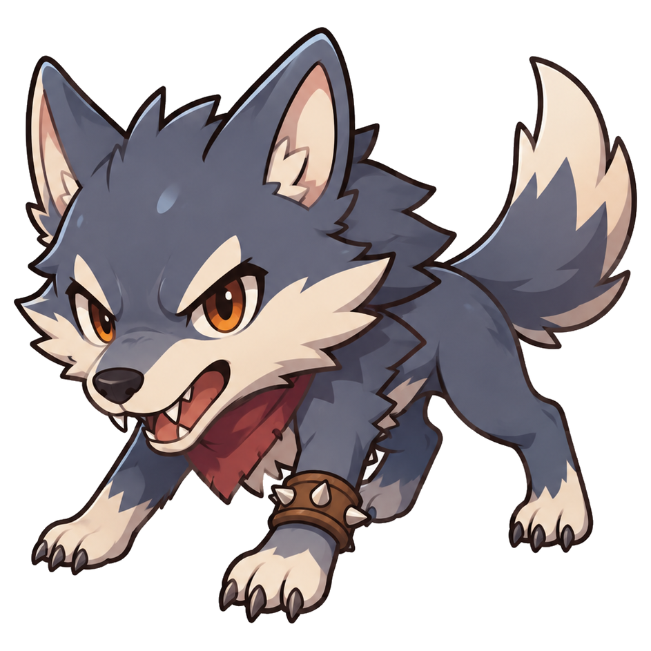
Sói rừng
Sói nhỏ sống theo đàn tại rìa rừng, có bộ lông xám dày và thính giác tốt. Bình thường chúng tránh xa làng và săn thú nhỏ, nhưng việc thức ăn bị cắt đứt cùng sự lan rộng của tà khí khiến đàn sói tiến gần đường vận chuyển. Trước khi xuất hiện, người chơi có thể thấy dấu chân, lông mắc trên bụi hoặc nghe tiếng hú.
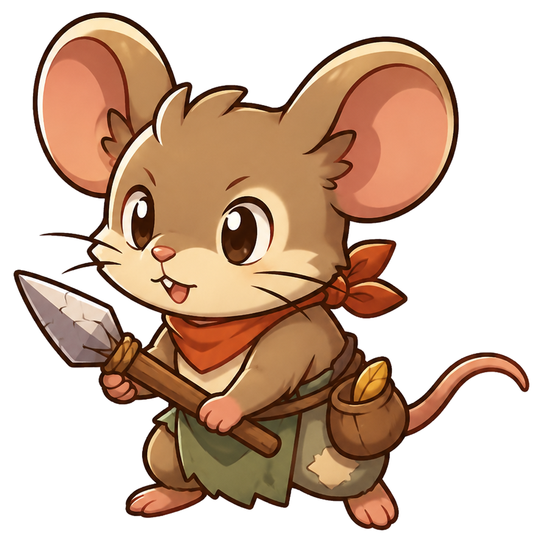
Chuột đồng trộm lương
Loài chuột thông minh sống quanh kho, ruộng và xe hàng. Chúng thu gom hạt giống vào túi nhỏ, thường chỉ gây phiền phức nhưng trở nên hung hăng khi nguồn thức ăn bị xáo trộn. Trong hệ sinh thái, chúng là thức ăn của sói và giúp phát tán hạt cây.
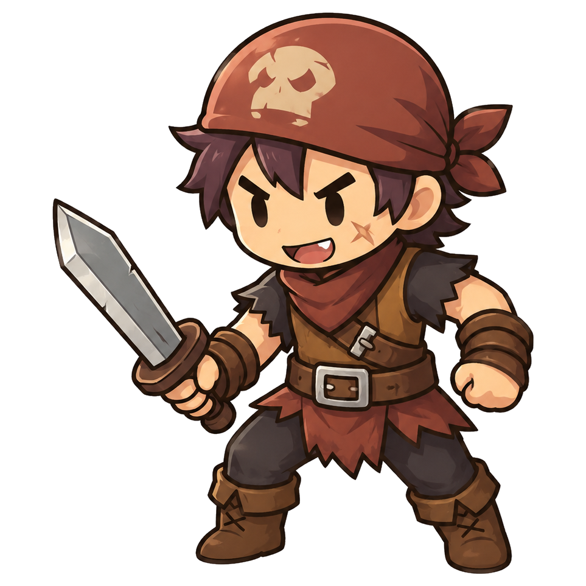
Sơn tặc đường rừng
Những người sống ngoài phạm vi bảo hộ của Peace, mặc đồ da cũ và dùng vũ khí dễ sửa chữa. Không phải tất cả đều thích cướp bóc; nhiều người tham gia vì gia đình bị cắt cứu trợ. Họ đặt bẫy trên đường, đánh nhanh rồi rút vào rừng.
Thủ lĩnh Râu Đỏ
Một cựu hộ vệ đoàn xe có vóc người thấp nhưng chắc khỏe, râu đỏ nổi bật và trang bị được ghép từ nhiều chuyến hàng. Râu Đỏ hiểu rõ tuyến đường và cách vận hành của Công Hội. Hắn là Boss mang tính xã hội đầu tiên: nguy hiểm, phạm tội nhưng có động cơ mà người chơi có thể hiểu.
Hồ sơ khu vực · Hồi 1
Thảo Nguyên Gió Hát
Trung tâm giao thương đường bộ
Cao trào / BossVua Goblin Grug
Bản sắc khu vực
Thảo Nguyên Gió Hát là trung tâm giao thương đường bộ của Ionie. Vùng đất không có một thành phố lớn duy nhất mà được tạo nên từ mạng lưới trạm nghỉ, cối xay, giếng nước, chợ tạm và các đoàn người liên tục di chuyển. Con đường chính là tài sản quan trọng nhất của vùng.
Cảnh quan và khí hậu
- Đồng cỏ vàng xanh kéo dài tới chân trời, các đồi thấp khiến gió thay đổi liên tục.
- Cối xay gió, cột chỉ đường, trạm xe và những cột đá linh thiêng của Goblin nổi bật trên nền trời.
- Ban ngày nắng mạnh nhưng thoáng; đêm lạnh và có thể nghe tiếng gió chạy qua cỏ.
- Gió đen từ phía Lâu Đài làm cỏ úa theo từng vệt và buộc nhiều đàn thú đổi đường di cư.
Cư dân, sinh kế và lối sống
Thương nhân, người chăn gia súc và người đánh xe sống theo lịch trình của đoàn hàng. Họ không coi một căn nhà cố định là trung tâm cuộc sống; nơi quen thuộc nhất là tuyến đường, quán trọ và những người thường xuyên gặp lại.
Các cộng đồng Goblin cũng sống bán du mục, dựng trại gần nguồn nước và cột gió. Goblin giỏi sửa đồ, tận dụng phế liệu và hiểu thời tiết hơn phần lớn thương nhân. Xung đột xảy ra khi người Peace xem đường lớn là tài sản của vương quốc, còn Goblin xem đó là vùng sinh tồn chung.
Văn hóa và kiến trúc
- Công trình người: Trạm nghỉ mái thấp, cối xay cao, xe hàng có thể biến thành lều.
- Công trình Goblin: Khung gỗ, vải vá nhiều màu, cánh gió và vật dụng tái chế.
- Thức ăn: Thịt khô, bánh dẹt, phô mai, củ nướng và trà cỏ.
- Phong tục: Chia sẻ tin tức về đường đi tại mỗi giếng nước; người lạ có thể đổi một câu chuyện lấy một bữa ăn.
- Niềm tin Goblin: Cột gió giữ ký ức của tổ tiên; phá cột gió bị xem là xúc phạm nghiêm trọng.
Background và biểu hiện trong gameplay
- Background ngoài Hồi: Một đoàn xe băng qua đồng cỏ, xa xa là pháo đài Goblin trên đồi gió.
- Nền chiến đấu 1: Cối xay và đồng cỏ sáng, nhiều thương nhân.
- Nền chiến đấu 2: Đường xe hàng với các ụ đá phục kích.
- Nền chiến đấu 3: Trại Goblin và cột gió vào chiều đỏ.
- Nền chiến đấu 4: Pháo đài đồi gió giữa gió đen.
- Biến đổi theo tiến trình: Đường đông dần trở nên vắng; xe hàng bị bỏ lại; cờ trắng và cờ chiến tranh xuất hiện đồng thời trong trại Goblin.
- Sự kiện phù hợp: Sửa bánh xe, chọn tuyến đi, chia nước, thương lượng phí đường, giúp dựng lại cột gió.
Liên kết cốt truyện
Thảo nguyên cho thấy “quái vật” có cộng đồng, trẻ nhỏ, nơi ở và nhu cầu sinh tồn. Xung đột tại đây không thể giải quyết bền vững chỉ bằng đánh bại Vua Goblin; tuyến đường cần một thỏa thuận được cả thương nhân và Goblin chấp nhận.
Quần thể sinh vật
6 loài / đơn vịBestiary của Thảo Nguyên Gió Hát
Ảnh đã được tách nền; mỗi mob được đặt cạnh mô tả sinh thái và vai trò trong vùng.
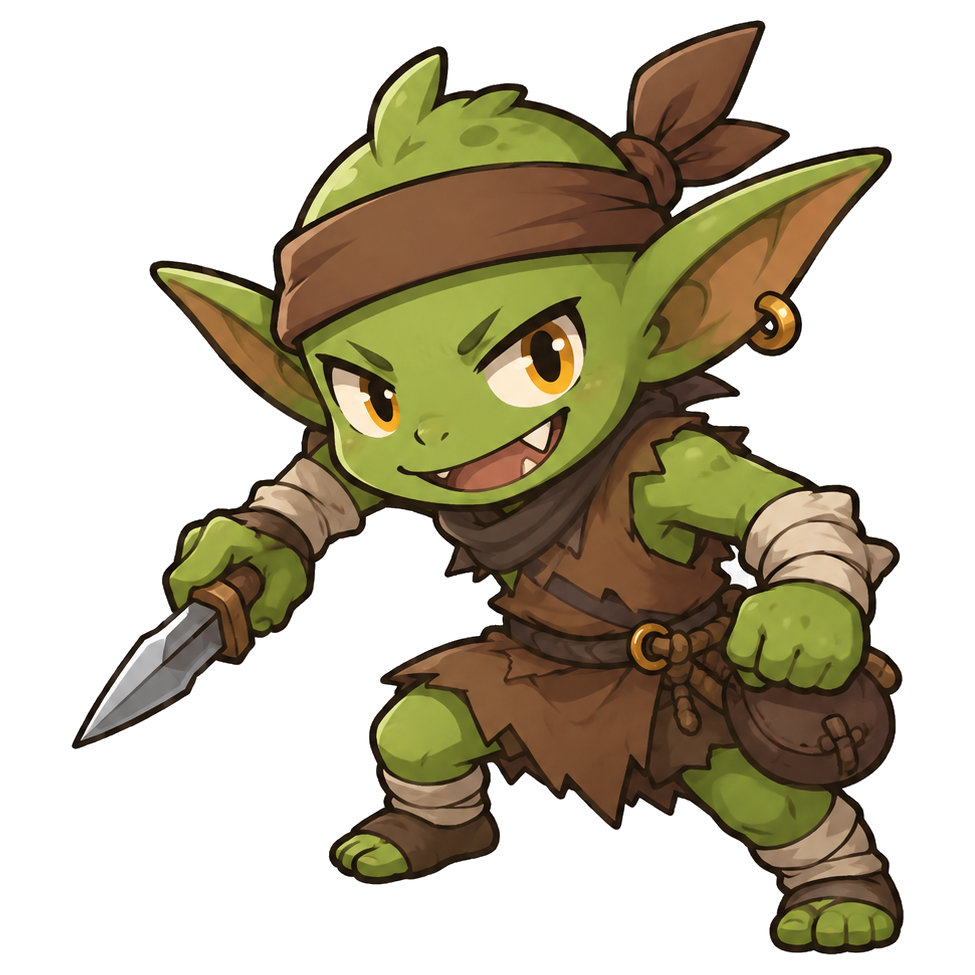
Goblin do thám
Goblin nhỏ, nhanh, mặc đồ ngụy trang bằng cỏ và mang dao ngắn. Chúng quan sát đoàn xe, đánh dấu hàng hóa và chỉ tấn công khi tin rằng trại đang bị đe dọa. Nếu được giúp đỡ, chúng có thể trở thành nguồn tin về đường đi.
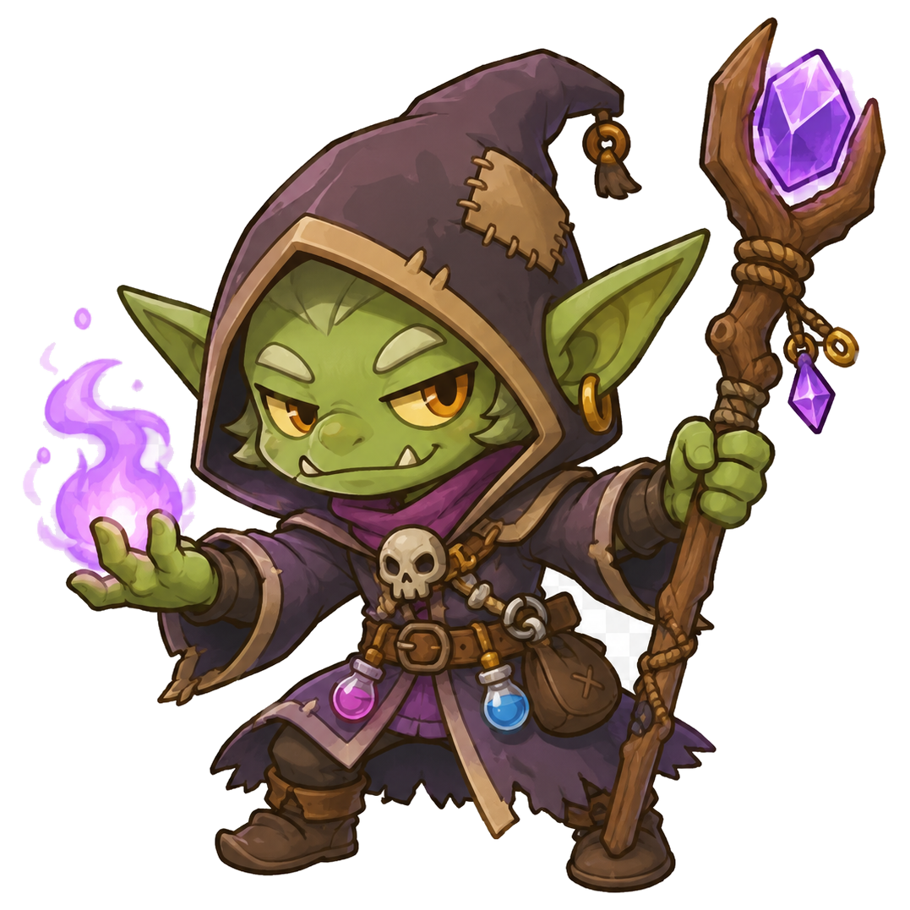
Pháp sư gió Goblin
Các pháp sư gìn giữ cột gió và dùng tinh thể nhỏ để điều hướng luồng khí. Áo choàng vá và nhiều túi thuốc cho thấy họ vừa là thầy cúng vừa là người chữa bệnh. Gió đen khiến phép thuật của họ mất ổn định, tạo ra các trận đánh thiên về hiệu ứng ngẫu nhiên.
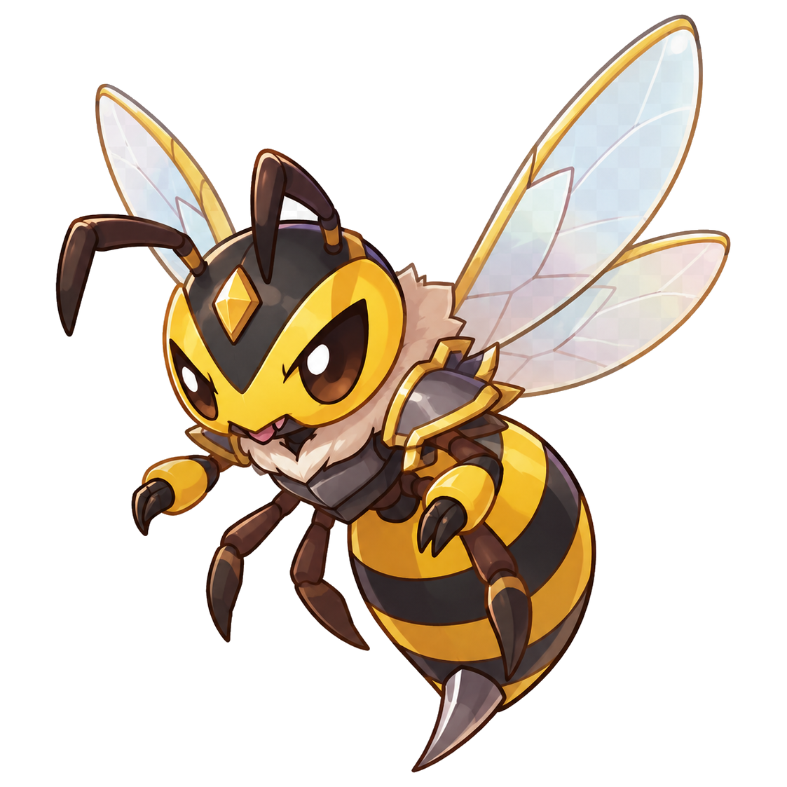
Ong giáp thảo nguyên
Ong lớn làm tổ trong cối xay bỏ hoang và các hốc đá. Chúng thụ phấn cho hoa cỏ nhưng cực kỳ hung dữ khi gió đen làm tổ bị lệch hướng. Âm thanh vo ve và bóng đen lướt qua cỏ là dấu hiệu trước trận.
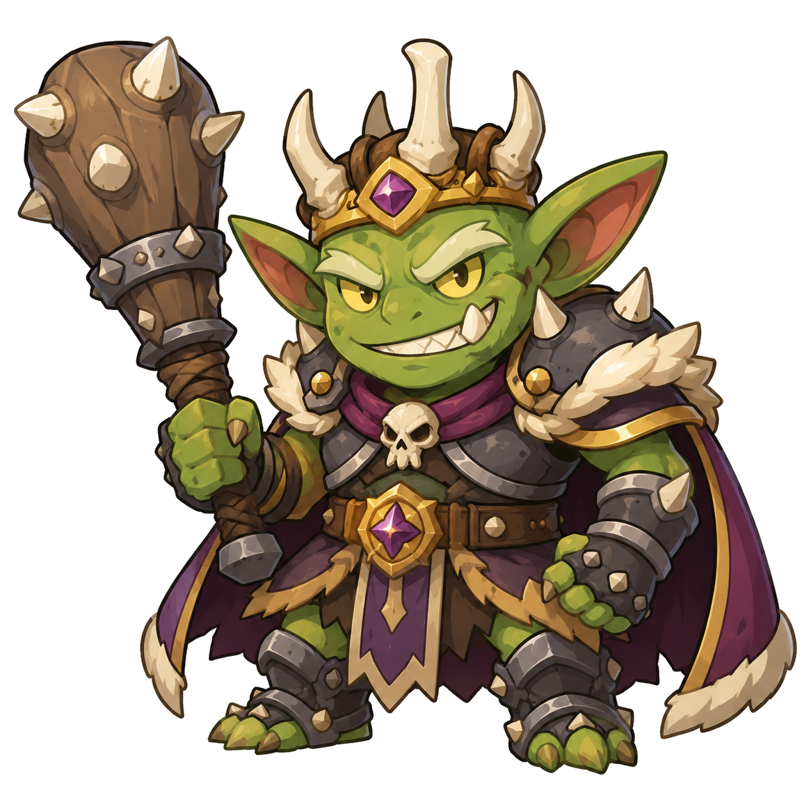
Vua Goblin Grug
Grug mặc giáp ghép từ chiến lợi phẩm nhưng vẫn giữ biểu tượng cột gió trên vương miện. Hắn có vẻ hiếu chiến, song thực chất đang cố duy trì trật tự cho cộng đồng tị nạn. Grug chiến đấu bằng chùy lớn, mệnh lệnh và khả năng gọi các nhóm Goblin hỗ trợ.
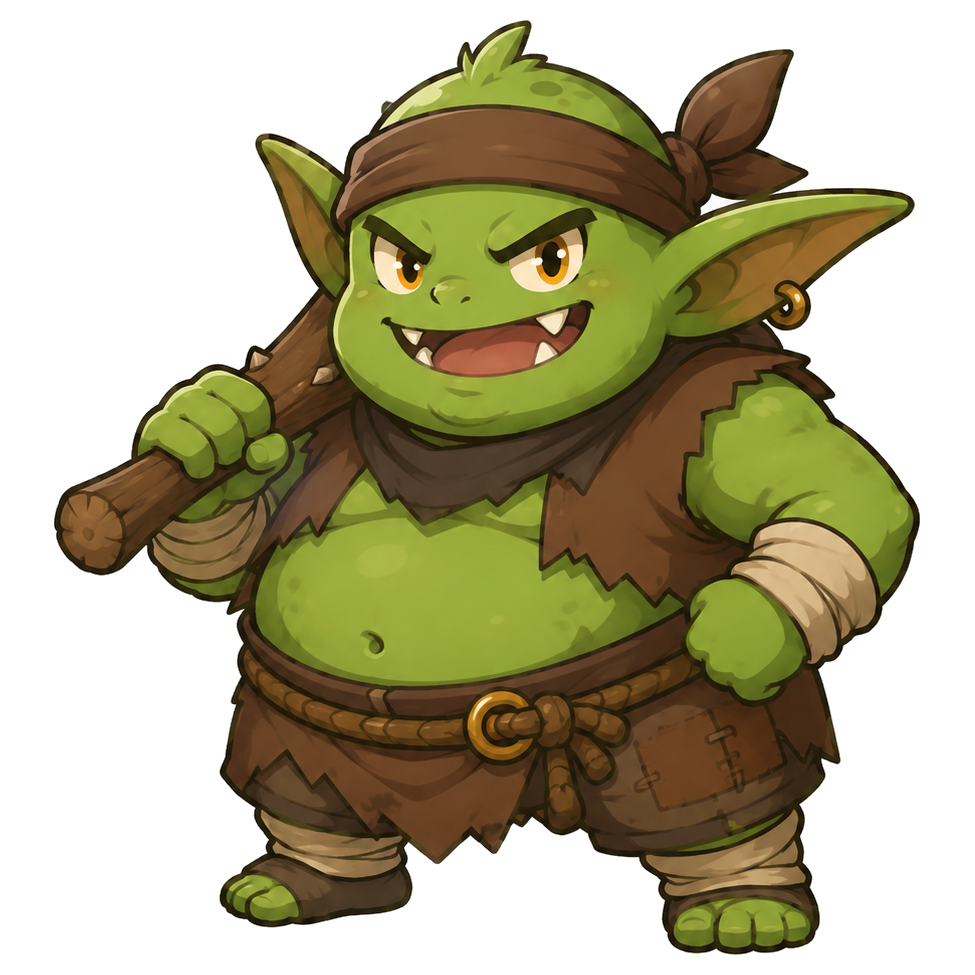
Goblin phá đường
Goblin khỏe, chuyên kéo xe, dựng trại và phá vật cản. Khi chiến đấu, chúng dùng gậy gỗ và cơ thể nặng để chặn tuyến trước. Ngoài chiến đấu, đây là lực lượng lao động chính giúp cộng đồng Goblin tồn tại.
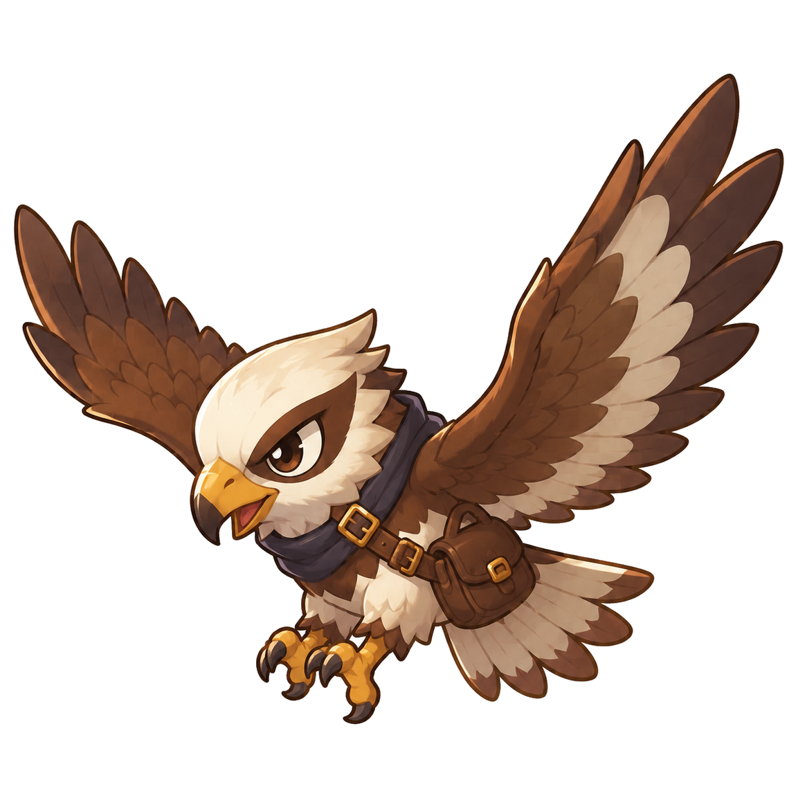
Đại bàng gió
Chim săn mồi làm tổ trên các cột đá cao, thường đi theo đoàn thú và ăn xác còn lại. Gió đen khiến chúng nhầm xe hàng là mối đe dọa. Lông đại bàng được người thảo nguyên dùng để dự báo hướng gió nhưng việc săn chúng bị hạn chế.
Hồ sơ khu vực · Hồi 2
Hẻm Núi Pha Lê
Kỳ quan khoáng sản và kho lưu trữ cổ
Cao trào / BossTitan Golem Khổng Lồ
Bản sắc khu vực
Hẻm Núi Pha Lê là trung tâm khai thác khoáng sản của Ionie, vừa là kỳ quan thiên nhiên vừa là dấu tích của nền ma thuật cổ. Cuộc sống tại đây được tổ chức quanh ca làm việc, thang nâng, đường xe goòng và độ ổn định của mỏ.
Cảnh quan và khí hậu
- Vách núi dựng đứng, cầu treo, đường hầm và các mạch pha lê phát sáng.
- Ban ngày khô, nhiều bụi; ban đêm lạnh sâu nhưng tinh thể phát ánh sáng xanh tím.
- Tiếng khai thác và tiếng bước chân vang rất xa, khiến cư dân có thói quen phân biệt nguy hiểm qua âm thanh.
- Các khu mỏ mới sáng và đông người; khu mỏ cổ tối, có rune và máy móc không ai còn hiểu hoàn toàn.
Cư dân, sinh kế và lối sống
Thợ mỏ, thợ rèn, người vận hành máy, học giả và thương nhân khoáng sản sống tại các trại bậc thang. Họ làm việc theo tiếng chuông ca, luôn kiểm tra đèn và dây an toàn trước khi vào mỏ. Các gia đình thường giữ một mảnh pha lê thô của người thân như lời chúc trở về an toàn.
Khu vực đem lại nguồn nguyên liệu lớn cho Peace nhưng người địa phương chịu nhiều rủi ro nhất. Việc Công Hội thúc ép sản lượng trong thời kỳ khủng hoảng khiến các quy tắc an toàn bị bỏ qua và làm lộ ra bí mật của Hiệp Ước.
Văn hóa và kiến trúc
- Nhà ở: Nhà đá bám theo sườn núi, gia cố bằng khung gỗ và dây cáp.
- Trang phục: Khăn che bụi, đèn đội đầu, găng dày và đồ có nhiều móc.
- Thức ăn: Súp đặc, bánh cứng, thịt hun khói và trà nóng.
- Phong tục: Gõ ba lần vào vách trước khi bắt đầu ca; để lại đèn sáng cho người chưa trở về.
- Điều cấm kỵ: Mang pha lê còn “hát” ra khỏi tàn tích cổ.
Background và biểu hiện trong gameplay
- Background ngoài Hồi: Hẻm núi khổng lồ với các cầu treo và mạch pha lê sáng xuyên vách đá.
- Nền chiến đấu 1: Miệng hẻm và trại khai thác.
- Nền chiến đấu 2: Mỏ tối với đường xe goòng.
- Nền chiến đấu 3: Tàn tích rune và kho lưu trữ cổ.
- Nền chiến đấu 4: Buồng lõi nơi Titan Golem thức tỉnh.
- Biến đổi theo tiến trình: Đèn mỏ tắt dần, khe nứt lan rộng, pha lê chuyển từ xanh sang tím đen và tiếng bước chân Titan ngày càng rõ.
- Nguy hiểm môi trường: Hầm sập, thiếu sáng, tinh thể phản xạ phép, xe goòng mất kiểm soát.
Liên kết cốt truyện
Hẻm Núi cho thấy nền hòa bình của Peace được duy trì bằng tài nguyên, lao động và bí mật bị chôn vùi. Đây là nơi Frieran đối diện ký ức cũ và người chơi nhận ra chu kỳ Ma Vương là một hệ thống được tạo ra, không phải quy luật tự nhiên.
Quần thể sinh vật
5 loài / đơn vịBestiary của Hẻm Núi Pha Lê
Ảnh đã được tách nền; mỗi mob được đặt cạnh mô tả sinh thái và vai trò trong vùng.
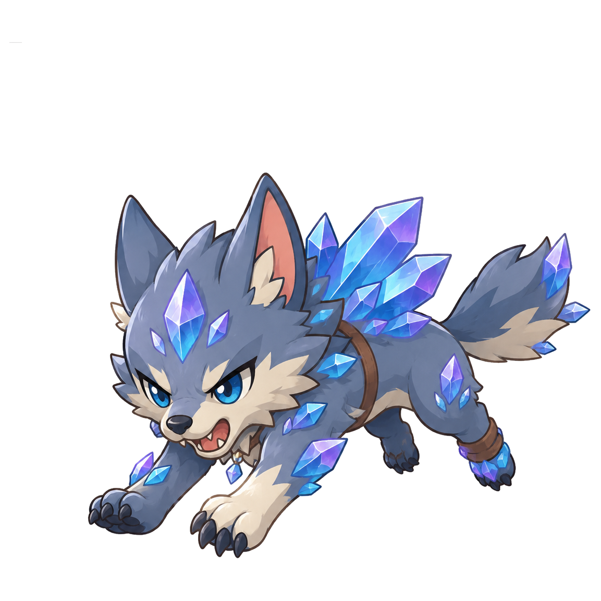
Sói Pha Lê
Sói sống gần các mạch tinh thể, lông và móng dần kết tinh sau nhiều thế hệ. Chúng hấp thụ ánh sáng để định hướng trong hang và bảo vệ lãnh thổ mạnh hơn sói thường. Khi tà khí lan tới, các tinh thể trên lưng phát sáng bất thường và làm chúng đau đớn.
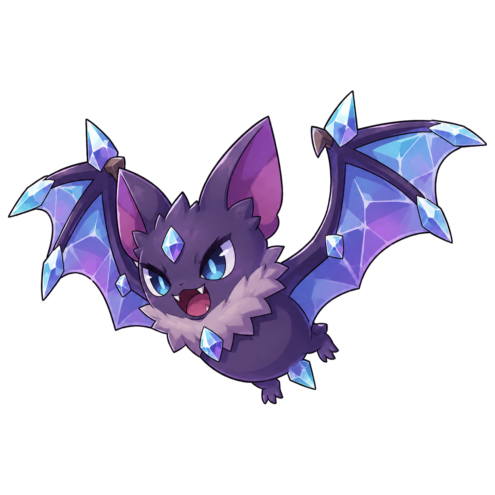
Dơi Pha Lê
Dơi ăn côn trùng sống trong hang, cánh mỏng có tinh thể giúp khuếch đại tiếng vang. Chúng thường báo trước khu vực sắp sập bằng việc bay ra hàng loạt. Khi bị kích động, âm thanh của cả đàn có thể làm choáng tổ đội.
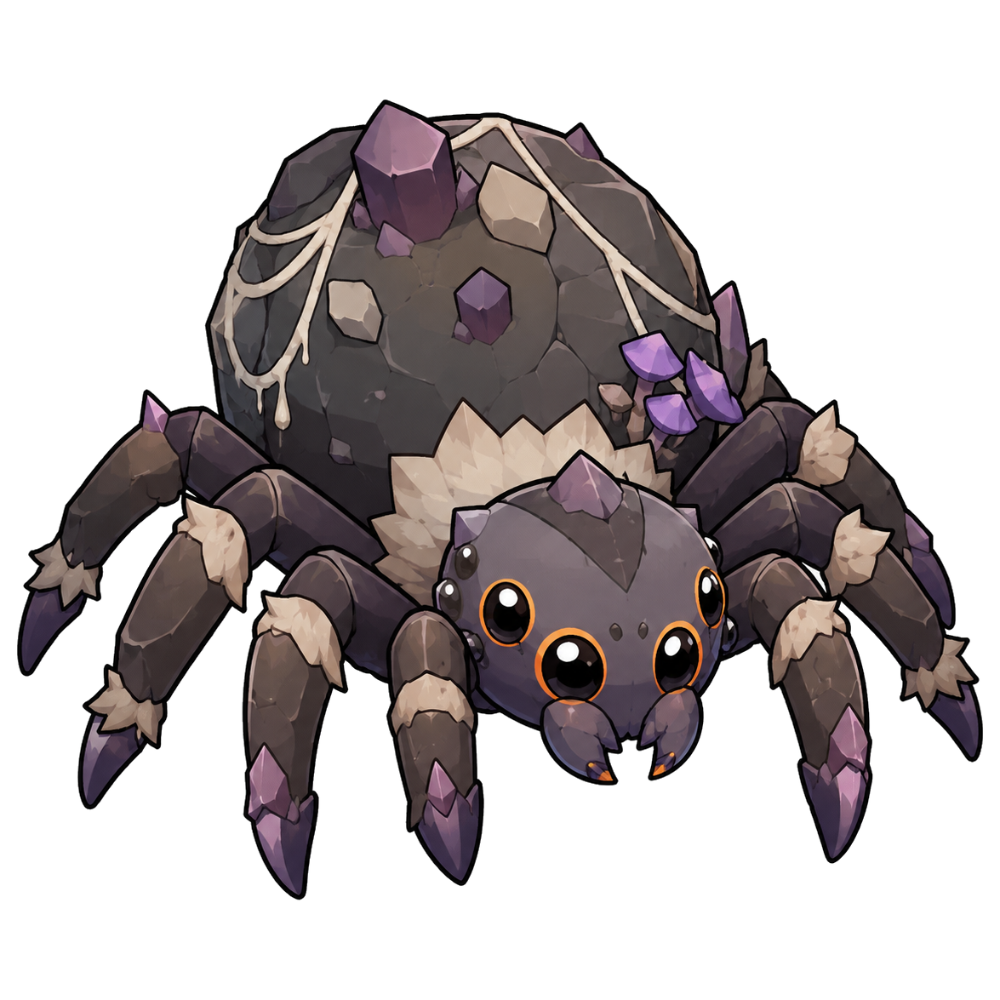
Nhện đá mỏ sâu
Nhện dùng đá vụn và khoáng chất phủ lên lưng để ngụy trang. Chúng làm tổ tại đường hầm bị bỏ hoang, ăn chuột mỏ và côn trùng. Tơ nhện giữ đất đá khá tốt, vì vậy tiêu diệt toàn bộ tổ có thể khiến hầm mất ổn định.
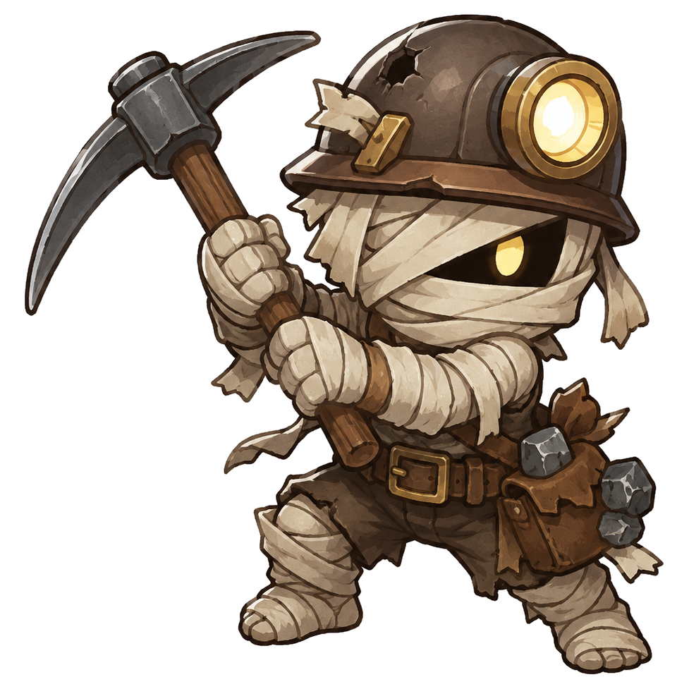
Thợ mỏ tha hóa
Những thợ mỏ bị mắc kẹt và ràng buộc với mệnh lệnh cuối cùng của khu mỏ. Họ vẫn mang cuốc, đèn và trang phục lao động, liên tục lặp lại ca làm việc dù không còn nhận thức đầy đủ. Họ là bằng chứng sống về việc Peace ưu tiên tài nguyên hơn con người.
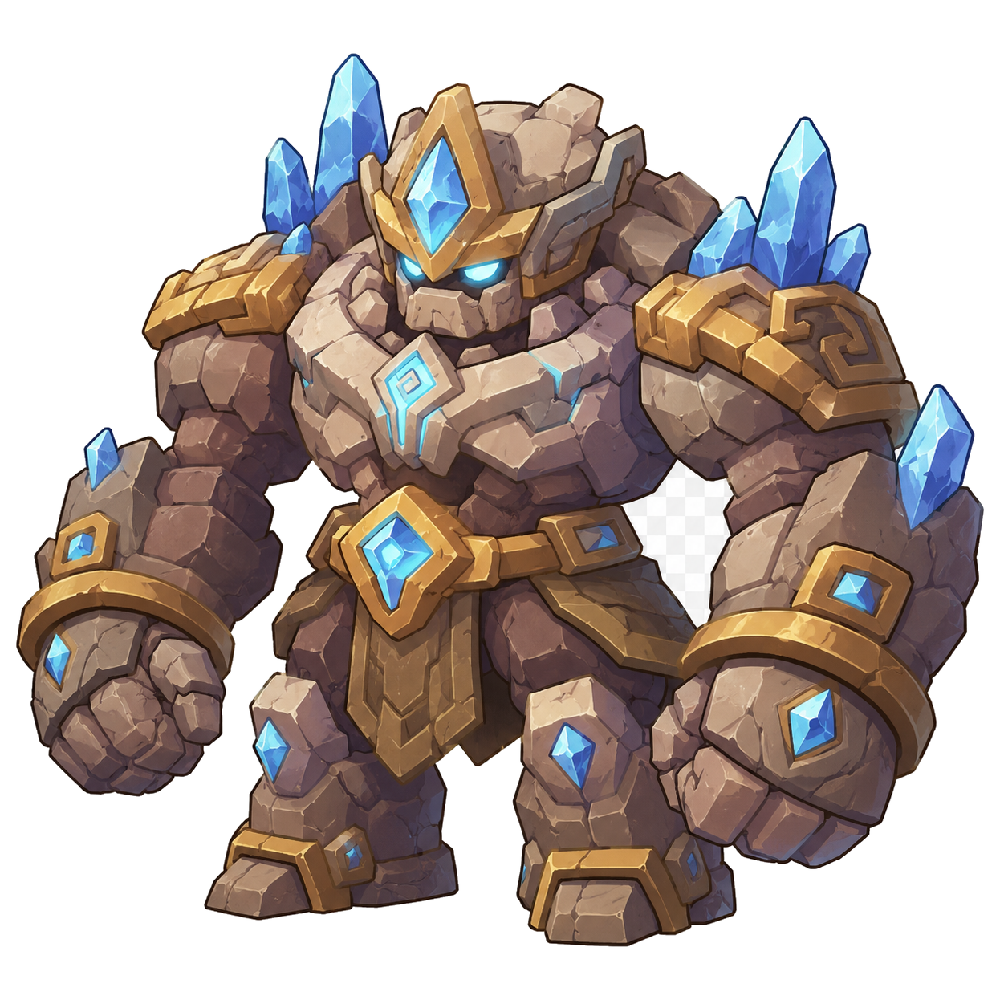
Titan Golem Khổng Lồ
Cỗ máy cổ bằng đá và pha lê, được tạo ra để bảo vệ kho lưu trữ Hiệp Ước. Titan không độc ác; nó chỉ phân loại mọi kẻ không có quyền truy cập là mối đe dọa. Các mạch sáng trên thân thể hiện trạng thái và giúp người chơi nhận biết giai đoạn chiến đấu.
Hồ sơ khu vực · Hồi 3
Bờ Biển San Hô
Cửa ngõ hàng hải của Peace
Cao trào / BossĐại Thủy Quái Karkos
Bản sắc khu vực
Bờ Biển San Hô là cửa ngõ hàng hải của Peace. Người dân sống theo thủy triều, gió biển và lịch tàu. Đây là vùng có văn hóa cởi mở nhất vì thủy thủ, thương nhân và người từ nhiều nơi liên tục gặp gỡ.
Cảnh quan và khí hậu
- Cảng gỗ, nhà sàn, bãi đá, đảo nhỏ, rạn san hô và vùng nước phát sáng.
- Ban ngày nhiều màu xanh ngọc và cam; đêm có sinh vật biển phát quang.
- Thời tiết thay đổi nhanh, từ biển lặng sang bão lớn.
- Xa bờ là đền chìm và khu khai thác bí mật của hạm đội Peace.
Cư dân, sinh kế và lối sống
Người dân làm thủy thủ, đóng tàu, đánh cá, lặn tìm vật liệu, buôn bán và dẫn đường. Một ngày bắt đầu theo thủy triều chứ không theo giờ cố định. Trẻ em học bơi và đọc cờ hiệu trước khi học chữ đầy đủ.
Mọi người quen với rủi ro và thường chia lợi nhuận theo chuyến tàu. Khi tàu không trở về, cộng đồng treo đèn tại cầu cảng trong ba đêm. Họ có thái độ thực tế với sinh vật biển: loài nào nguy hiểm cần tránh, loài nào có thể hợp tác và loài nào phải được bảo vệ để rạn san hô tồn tại.
Văn hóa và kiến trúc
- Nhà ở: Nhà sàn gỗ, mái cong chống gió, dây neo và vỏ sò trang trí.
- Thức ăn: Cá nướng, canh rong, sò hấp, bánh muối và trái cây chua.
- Trang phục: Vải nhẹ, khăn đầu, áo chống nước và nhiều túi buộc kín.
- Phong tục: Gõ vào thân tàu trước khi rời cảng; không huýt sáo khi biển lặng vì bị xem là gọi bão.
- Lễ hội: Tháng San Hô, khi tàu được trang trí và người dân sửa rạn gần bờ.
Background và biểu hiện trong gameplay
- Background ngoài Hồi: Cảng San Hô đông đúc, tàu lớn hướng ra vùng biển có bóng Karkos.
- Nền chiến đấu 1: Cầu cảng và boong tàu.
- Nền chiến đấu 2: Bãi đá san hô lúc thủy triều thấp.
- Nền chiến đấu 3: Vùng nước sứa điện phát sáng.
- Nền chiến đấu 4: Boong tàu giữa bão và xúc tu Karkos.
- Biến đổi theo tiến trình: Cảng vui vẻ chuyển sang tàu hỏng, lưới rách và giấy báo mất tích; nước biển xuất hiện mảnh pha lê và thiết bị khai thác của Peace.
- Sự kiện phù hợp: Sửa tàu, cứu thợ lặn, chọn đi xuyên bão hay vòng xa, trả sinh vật mắc lưới về biển.
Liên kết cốt truyện
Bờ Biển San Hô cho thấy sự thịnh vượng của Peace đang dựa trên hoạt động khai thác mà người dân không được biết. Tarot phải đối diện với hậu quả từ những mệnh lệnh mình từng ký và lần đầu tự lựa chọn thay vì giao quyết định cho vận mệnh.
Quần thể sinh vật
5 loài / đơn vịBestiary của Bờ Biển San Hô
Ảnh đã được tách nền; mỗi mob được đặt cạnh mô tả sinh thái và vai trò trong vùng.
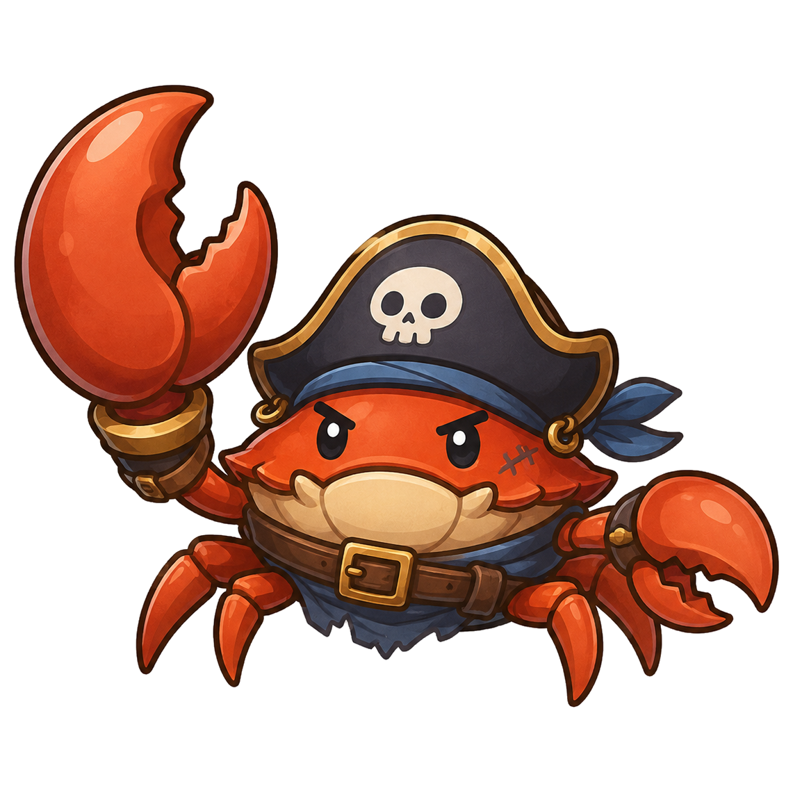
Cua hải tặc
Cua thông minh thu gom đồ từ xác tàu và đeo chúng như trang bị. Chúng sống thành bầy quanh bãi đá, bảo vệ kho vật sáng và tấn công bất kỳ ai mang biểu tượng hạm đội Peace. Hình dáng vui nhộn che giấu khả năng phối hợp rất tốt.
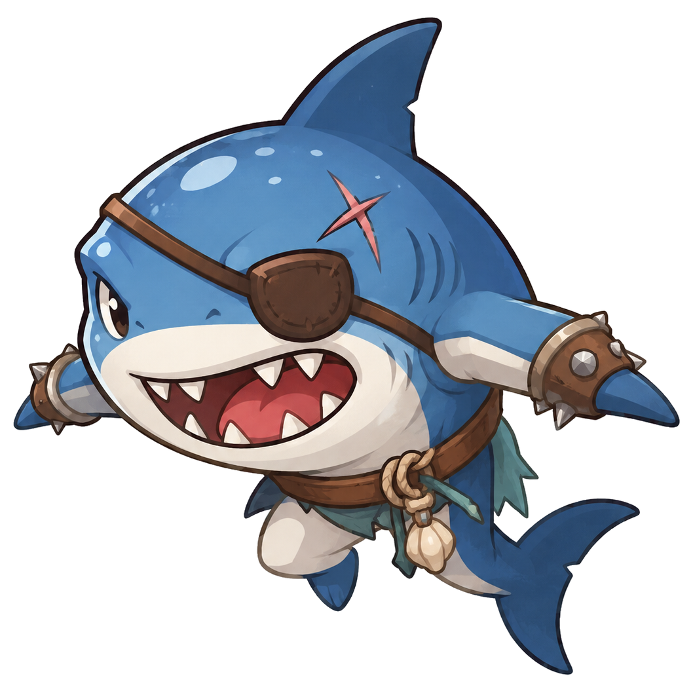
Cá mập chột mắt
Cá mập lớn từng bị thương bởi thiết bị khai thác nên đặc biệt hung dữ với tàu. Nó tuần tra vùng biển sâu và thường chỉ xuất hiện khi có máu hoặc tiếng máy khoan. Vết sẹo và mắt che giúp kể lại tác động của con người lên vùng biển.
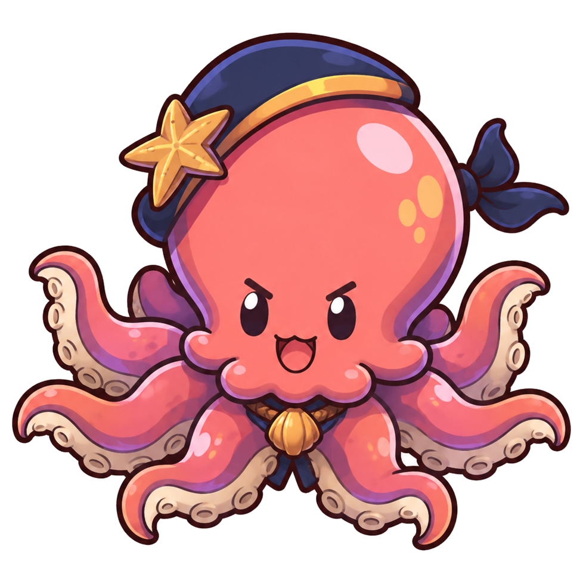
Bạch tuộc nhỏ
Sinh vật tò mò sống trong rạn, thường lấy đồ vật nhỏ để trang trí nơi ở. Khi Karkos bị kích động, chúng tập trung quanh tàu và phun mực làm rối đội hình. Ngoài chiến đấu, người chơi có thể đổi đồ sáng lấy vật phẩm chúng nhặt được.
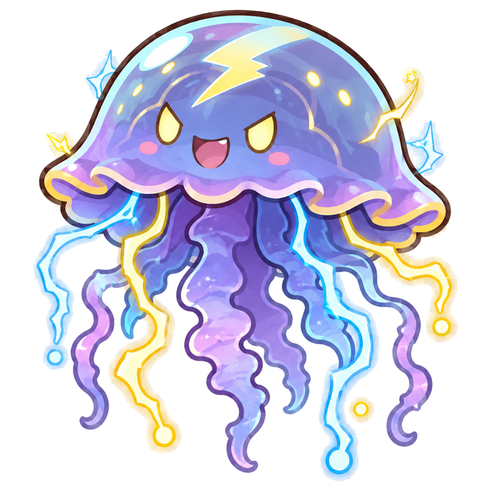
Sứa điện
Sứa phát điện di chuyển theo dòng nước và giúp cung cấp năng lượng tự nhiên cho nhiều sinh vật biển. Thiết bị khai thác làm dòng chảy thay đổi, khiến đàn sứa trôi vào tuyến tàu. Ánh sáng xanh vàng báo trước đòn điện diện rộng.
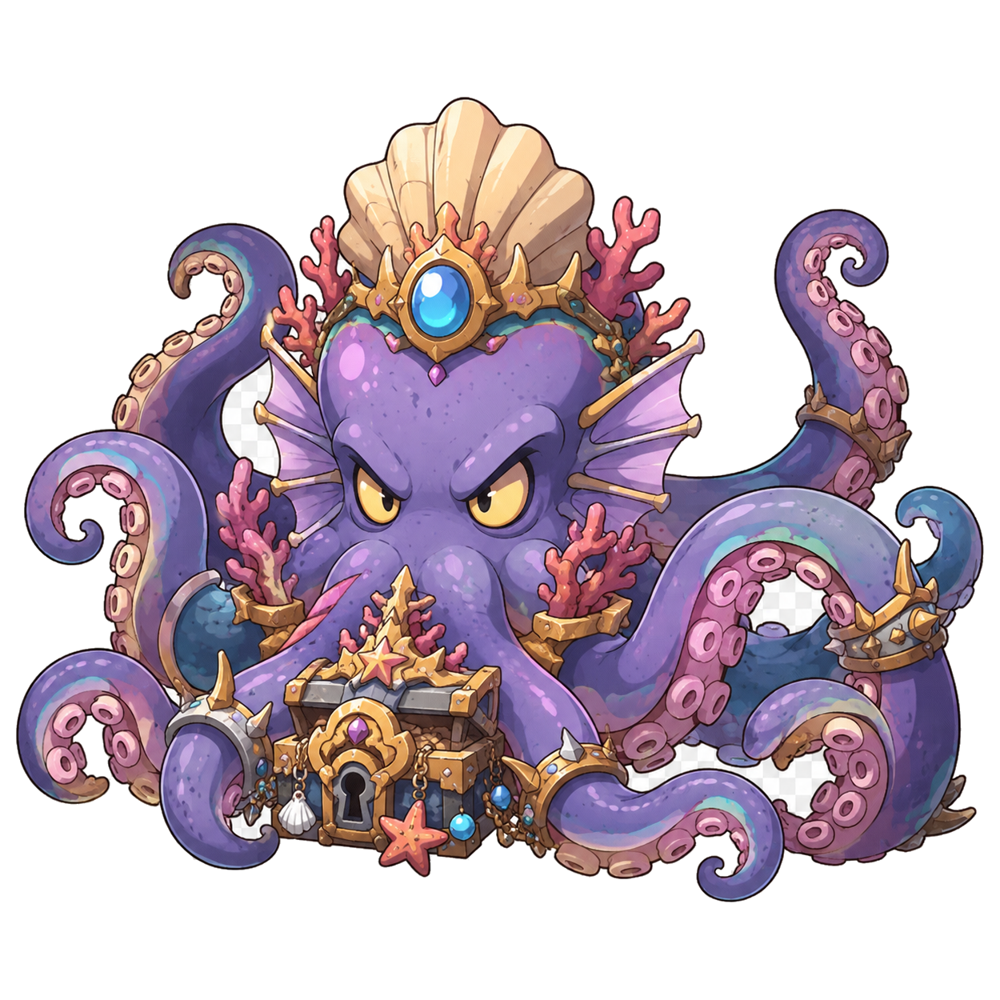
Đại Thủy Quái Karkos
Karkos là sinh vật cổ đại bảo vệ đền chìm và rạn san hô. Nó trang trí cơ thể bằng san hô, vỏ sò và di vật của ngôi đền. Karkos tấn công tàu không vì đói mà vì hạm đội Peace đã liên tục phá nơi nó bảo vệ.
Hồ sơ khu vực · Hồi 4
Rừng Thông Chạng Vạng
Mạng lưới sống cổ gần lãnh địa Ma Vương
Cao trào / BossHắc Long Ignis
Bản sắc khu vực
Rừng Thông Chạng Vạng là khu sinh thái cổ nằm gần lãnh địa Ma Vương. Ánh sáng trong rừng luôn giống thời điểm ngay trước khi đêm xuống. Đây không phải vùng do con người quản lý mà là mạng lưới sống gồm cây cổ, tinh linh, thú rừng và các cộng đồng nhỏ tôn trọng quy luật tự nhiên.
Cảnh quan và khí hậu
- Thông cao, sương dày, rễ cây nổi, nấm phát sáng và các khoảng rừng có ánh tím.
- Khí hậu ẩm, lạnh; ánh sáng thay đổi chậm khiến người ngoài dễ mất cảm giác thời gian.
- Rễ Cây Nguồn kết nối nhiều phần của rừng và truyền tín hiệu như một hệ thần kinh.
- Tà khí không chỉ làm sinh vật hung dữ mà còn tạo các vùng cây cháy đen, nấm độc và bóng tối sống.
Cư dân, sinh kế và lối sống
Rừng không có đô thị lớn. Người hái thuốc, kiểm lâm, tinh linh và vài cộng đồng sống tại rìa rừng chỉ lấy đủ thứ cần thiết. Họ di chuyển theo lối mòn được cây cho phép mở ra, sử dụng gỗ rụng thay vì chặt cây sống và đánh dấu đường bằng chuông gió.
Cuộc sống dựa vào quan sát: màu nấm, hướng chim bay, độ ẩm của rêu và tiếng rễ chuyển động. Người dân không xem bóng tối là hoàn toàn xấu; mục rữa, nấm và đất đen đều cần thiết để rừng tái sinh.
Văn hóa và kiến trúc
- Nhà ở: Lều trên rễ lớn, nhà cây và nơi trú ẩn kết từ cành rụng.
- Thức ăn: Nấm ăn được, quả rừng, trà lá thông, mật và rau củ nhỏ.
- Trang phục: Vải tối màu, áo choàng chống sương, dây đeo thảo dược.
- Phong tục: Xin phép trước khi lấy vật từ rừng; để lại hạt giống hoặc nước sạch như sự trao đổi.
- Điều cấm kỵ: Đốt lửa lớn, phá tổ, chặt Cây Nguồn hoặc giết sinh vật chỉ vì chúng nhiễm tà.
Background và biểu hiện trong gameplay
- Background ngoài Hồi: Rừng thông tím xanh, Cây Nguồn ở xa và bóng Ignis trên bầu trời.
- Nền chiến đấu 1: Bìa rừng trong sương.
- Nền chiến đấu 2: Mạng rễ và vùng nấm độc.
- Nền chiến đấu 3: Cây Nguồn cùng các mạch sáng.
- Nền chiến đấu 4: Đường núi cháy âm ỉ và Long Sào.
- Biến đổi theo tiến trình: Sương chuyển từ trắng sang tím đen, thú rừng xuất hiện vết tà khí; sau khi Elaine học cách chuyển hóa, nấm và chồi non mọc trên thân cây cháy.
- Nguy hiểm môi trường: Sương che tầm nhìn, rễ đổi đường, bào tử độc, hắc hỏa và ảo ảnh.
Liên kết cốt truyện
Rừng Chạng Vạng dạy Elaine và người chơi rằng chữa lành không đồng nghĩa xóa bỏ mọi thứ đen tối. Hệ sinh thái cần chuyển hóa tổn thương thành điều có thể nuôi dưỡng sự sống, tạo nền tảng cho phương án thay thế Hiệp Ước Trăm Năm.
Quần thể sinh vật
6 loài / đơn vịBestiary của Rừng Thông Chạng Vạng
Ảnh đã được tách nền; mỗi mob được đặt cạnh mô tả sinh thái và vai trò trong vùng.
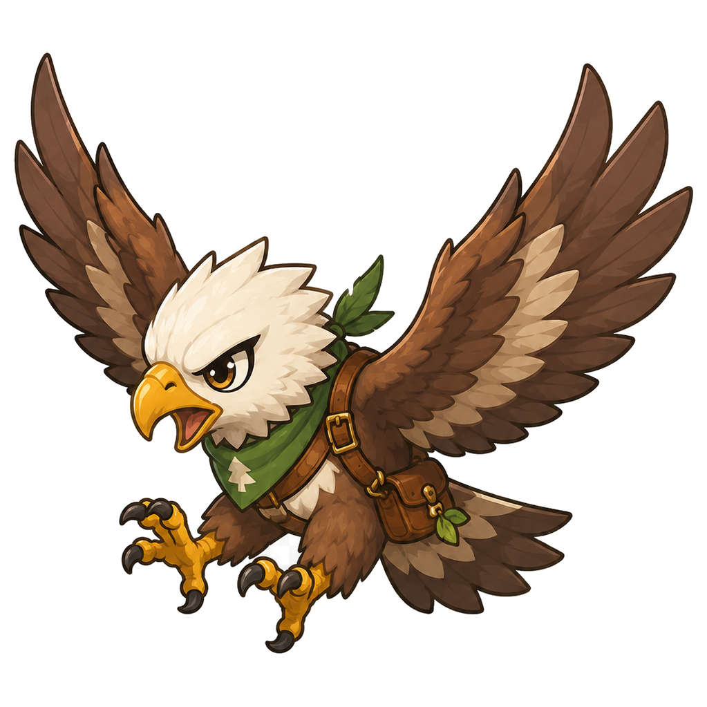
Đại bàng Chạng Vạng
Chim săn mồi làm tổ trên tầng cây cao và giúp rừng phát hiện đám cháy, sinh vật lạ. Khi tà khí lan rộng, chúng trở nên bảo vệ lãnh thổ quá mức. Tiếng cánh và lá rơi từ trên cao là dấu hiệu cảnh báo.
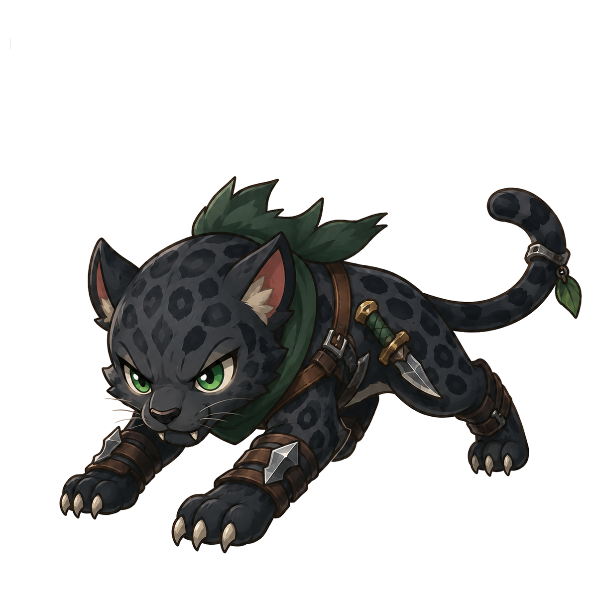
Báo đen nhiễm tà
Loài săn mồi giữ cân bằng số lượng thú ăn cỏ, có khả năng di chuyển gần như không gây tiếng động. Các đốm đen lan rộng và mắt phát sáng cho thấy nó đang chịu ảnh hưởng của tà khí. Thay vì bị tiêu diệt hoàn toàn, một số sự kiện cho phép người chơi thanh tẩy và thả nó về rừng.
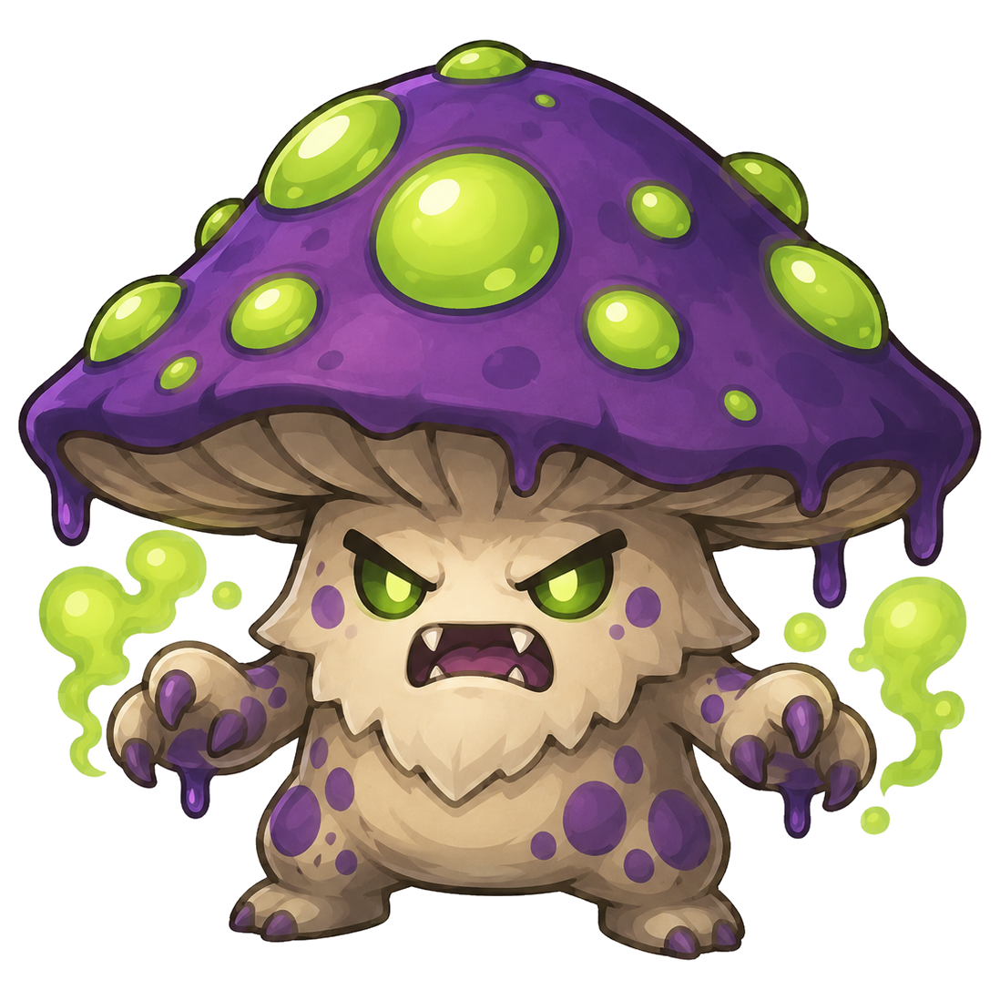
Nấm độc cuồng nộ
Nấm vốn phân hủy cây chết và tạo đất mới, nhưng hấp thụ tà khí quá mức sẽ di chuyển và phun bào tử độc. Chúng chứng minh bóng tối vẫn có vai trò trong hệ sinh thái, chỉ trở thành nguy hiểm khi mất cân bằng.
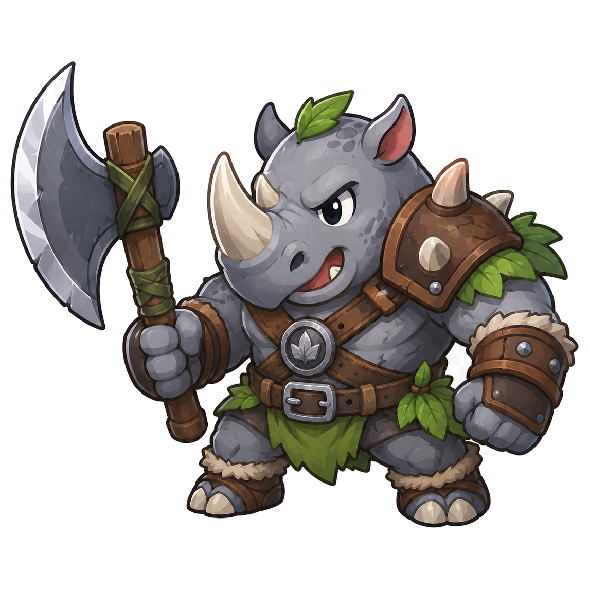
Tê giác gác rừng
Sinh vật ăn cỏ lớn dùng sừng dọn cây đổ và mở lối cho thú nhỏ. Lớp giáp thô và rìu gỗ cho cảm giác như một chiến binh, nhưng bản chất nó chỉ bảo vệ vùng sinh sản. Tà khí khiến nó nhầm mọi người đi qua là kẻ phá rừng.
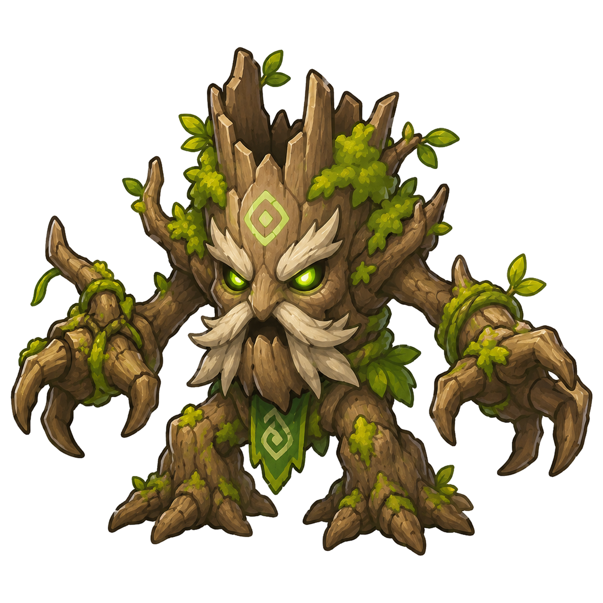
Hộ vệ Cây Nguồn
Thực thể hình thành từ gỗ, rễ và ý chí của khu rừng. Hộ vệ thức tỉnh khi Cây Nguồn gặp nguy hiểm, điều khiển rễ và triệu hồi mầm cây. Khi nhiễm tà, nó vẫn cố bảo vệ rừng nhưng không còn phân biệt được đồng minh.
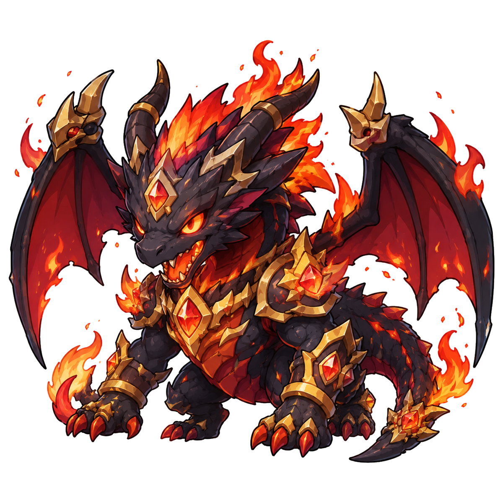
Hắc Long Ignis
Ignis là sinh vật bảo vệ con đường tới lâu đài và đã tự hấp thụ tà khí nhiều năm để ngăn rừng bị hủy hoại. Vảy của nó cháy bằng hắc hỏa, nhưng giữa các khe vảy vẫn có ánh sáng đỏ cam của sinh mệnh. Ignis là Boss cần được cứu khỏi mất kiểm soát, không phải nguồn gốc căn bệnh.
Hồ sơ khu vực · Hồi 5
Lâu Đài Ma Vương
Nhà tù và cỗ máy phong ấn khổng lồ
Cao trào / BossSolon & Lõi Hiệp Ước
Bản sắc khu vực
Lâu Đài Ma Vương được người Peace mô tả như căn cứ của quân xâm lược, nhưng thực chất là một nhà tù và cỗ máy phong ấn khổng lồ. Nơi đây chứa hồ sơ của mười Ma Vương trước, các phòng nghi lễ, cơ chế phòng thủ tự động và những sinh vật bị buộc phải duy trì vai trò qua nhiều thế hệ.
Cảnh quan và khí hậu
- Lâu đài đá đen nằm giữa vùng đất ít cây, bầu trời đỏ tím và các dòng năng lượng chạy dưới đất.
- Bên trong có hành lang quá rộng, tượng của các “anh hùng”, thư viện hồ sơ, phòng trà và phòng ngai.
- Ánh sáng đến từ lửa ma thuật và các mạch phong ấn, không có chu kỳ ngày đêm rõ ràng.
- Kiến trúc càng vào sâu càng bộc lộ hai lớp: bên ngoài đáng sợ để phù hợp truyền thuyết, bên trong cô độc và được duy trì như một nơi ở bắt buộc.
Cư dân và “lối sống” trong lâu đài
Không có xã hội bình thường, nhưng các sinh vật trong lâu đài vẫn có một nhịp sống kỳ lạ. Quỷ nhỏ sửa đèn, mang hồ sơ và tập các tư thế đe dọa. Quỷ pháp sư duy trì phong ấn. Giáp sống tuần tra theo lộ trình không thay đổi. Vuu đọc biên niên sử, luyện diễn văn Ma Vương, uống trà và ghi chép những thứ mình chưa từng được nhìn thấy ngoài lâu đài.
Nhiều sinh vật không muốn xâm lược Peace; chúng chỉ chưa từng được trao lựa chọn nào khác ngoài vai trò “quân đội Ma Vương”.
Văn hóa và kiến trúc
- Kiến trúc: Cột đá cao, cửa nặng, kính màu đỏ, biểu tượng phong ấn và phòng được thiết kế để gây sợ hãi.
- Không gian đời thường: Bếp ít sử dụng, phòng trà sạch bất ngờ, kho sách và hàng trăm lá thư chưa gửi.
- Nghi thức: Mỗi sinh vật đều có lời thoại, vị trí và nhiệm vụ được ghi sẵn như đang diễn một vở kịch lặp lại.
- Điều cấm kỵ: Rời khỏi lâu đài, sửa nội dung Hiệp Ước hoặc để Ma Vương biết quá nhiều về thế giới bên ngoài.
Background và biểu hiện trong gameplay
- Background ngoài Hồi: Lâu đài đen dưới bầu trời đỏ, nhưng một cửa sổ nhỏ có ánh đèn ấm.
- Nền chiến đấu 1: Cổng quỷ và cầu xích.
- Nền chiến đấu 2: Hành lang ma pháp và thư viện hồ sơ.
- Nền chiến đấu 3: Điện kỵ sĩ, giáp và tượng anh hùng.
- Nền chiến đấu 4: Phòng ngai cùng lõi Hiệp Ước.
- Biến đổi theo tiến trình: Hình ảnh ban đầu củng cố cảm giác “sào huyệt quỷ”; càng đi sâu, người chơi thấy phòng trà, thư cầu cứu và bằng chứng các Ma Vương trước đều bị giam giữ.
- Nguy hiểm môi trường: Phòng đổi vị trí, ảo ảnh, phong ấn cưỡng ép, hắc khí sống và đợt quỷ triệu hồi.
Liên kết cốt truyện
Lâu Đài đảo ngược hoàn toàn kỳ vọng của người chơi. Đích đến được xem là nguồn gốc của mọi vấn đề thực ra là nơi lưu giữ hậu quả của cách Peace duy trì hòa bình. Mục tiêu cuối không còn là tiêu diệt Vuu mà là phá vỡ vai trò đã cưỡng ép tất cả cùng lặp lại.
Quần thể sinh vật
6 loài / đơn vịBestiary của Lâu Đài Ma Vương
Ảnh đã được tách nền; mỗi mob được đặt cạnh mô tả sinh thái và vai trò trong vùng.
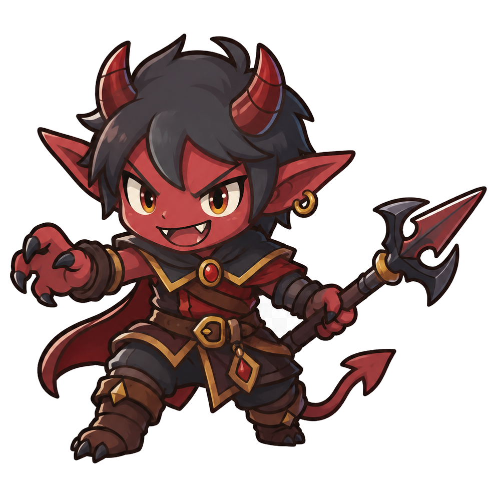
Quỷ nhỏ cận chiến
Quỷ trẻ được giao nhiệm vụ tuần tra, dùng đinh ba nhỏ và cố tỏ ra đáng sợ. Chúng thường làm theo lệnh vì chưa từng biết cách sống khác. Một số sự kiện có thể khiến chúng bỏ vũ khí nếu được bảo đảm không bị tiêu diệt.
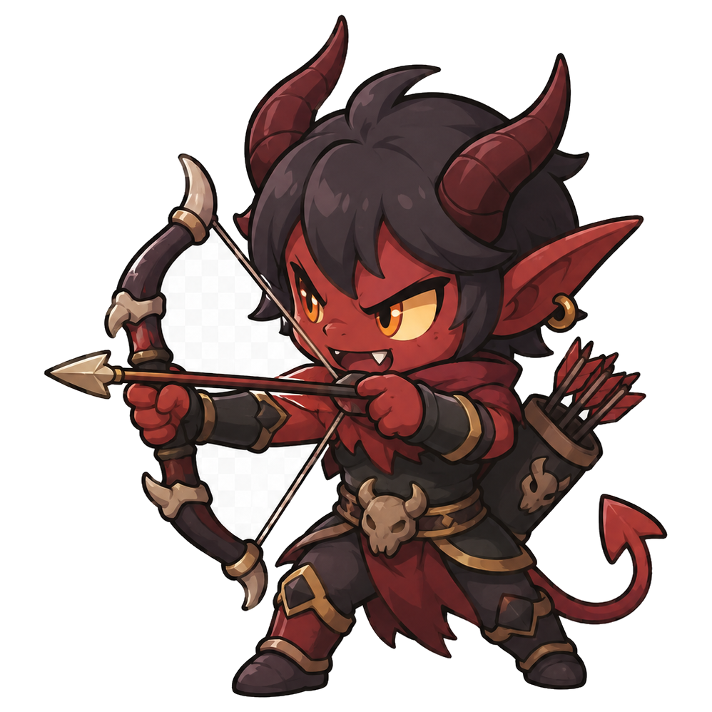
Quỷ cung thủ
Lực lượng canh gác các hành lang dài và cửa sổ cao. Chúng có thị lực tốt, giao tiếp bằng tiếng huýt và thích khắc dấu lên tên. Trong trận chiến, chúng buộc tổ đội phải xử lý kẻ địch tuyến sau.
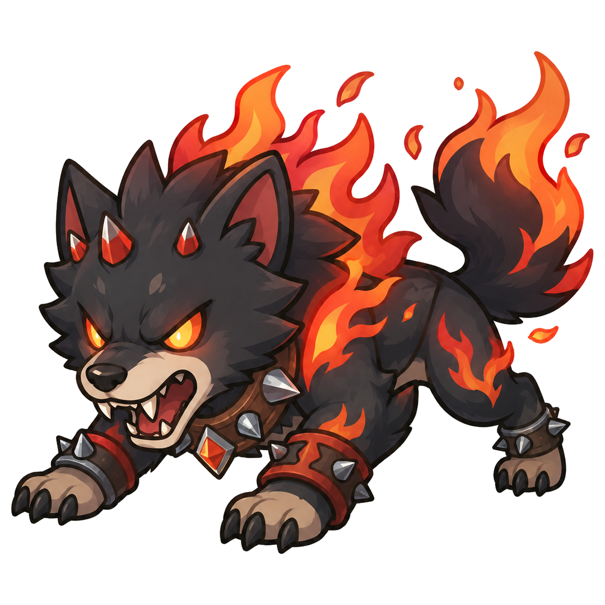
Chó săn địa ngục
Sinh vật canh cổng có lông cháy và khả năng lần theo hắc khí. Chúng trung thành với người chăm sóc hơn là Hiệp Ước. Dù nguy hiểm, hành vi của chúng vẫn giống chó bảo vệ lãnh thổ và có thể bị đánh lạc hướng bằng mùi thức ăn.
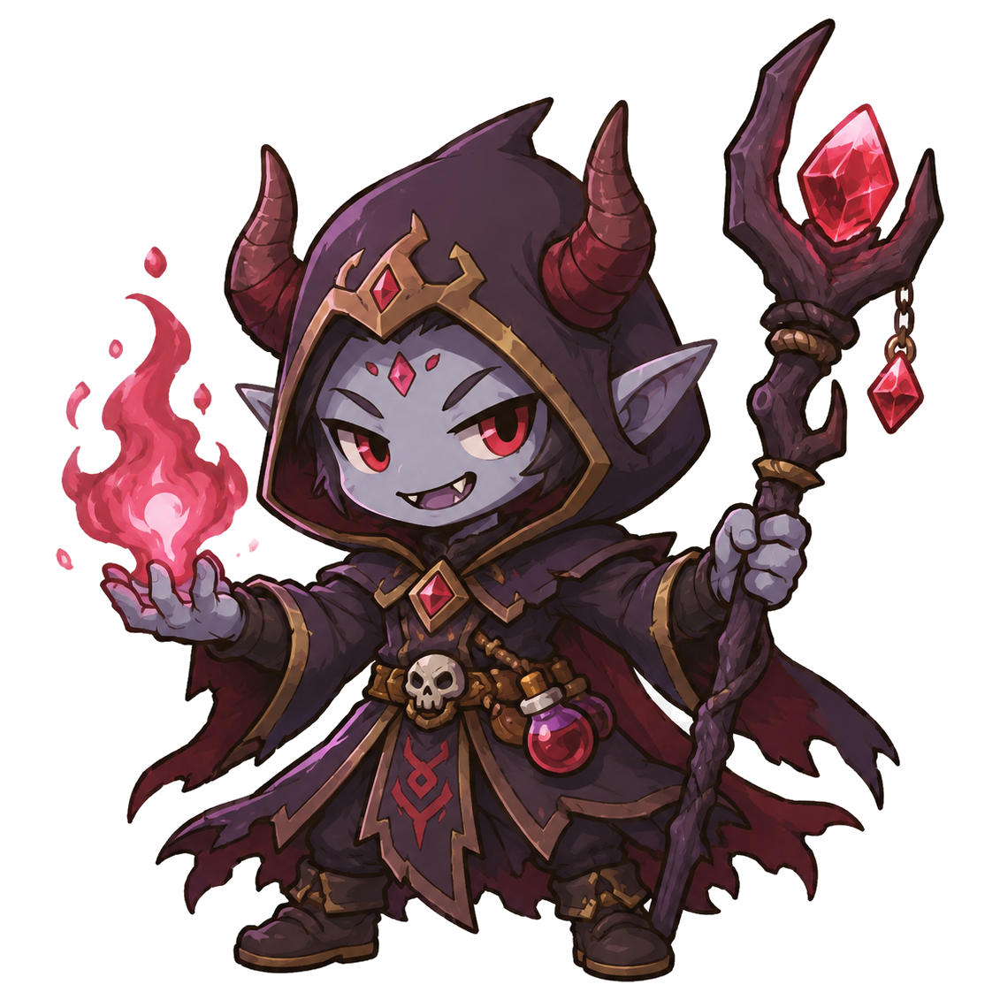
Quỷ pháp sư
Các pháp sư duy trì hệ thống phong ấn bằng phép lửa tím. Họ hiểu nhiều phần của Hiệp Ước nhưng không có quyền dừng nó. Một số người sợ sự sụp đổ của lâu đài hơn là trung thành với Vuu.
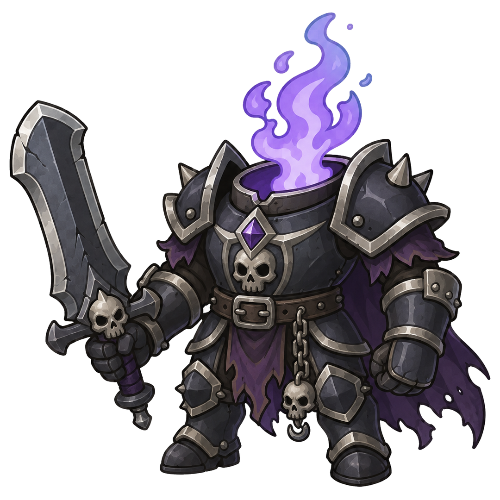
Kỵ sĩ không đầu
Bộ giáp sống được tạo từ ký ức của một hộ vệ từng phục vụ Ma Vương đời trước. Ngọn lửa tím thay cho đầu giúp nó nhận biết mệnh lệnh nhưng không thể nhớ tên mình. Trận chiến với kỵ sĩ mang tính bi kịch hơn là đối đầu với một kẻ ác.
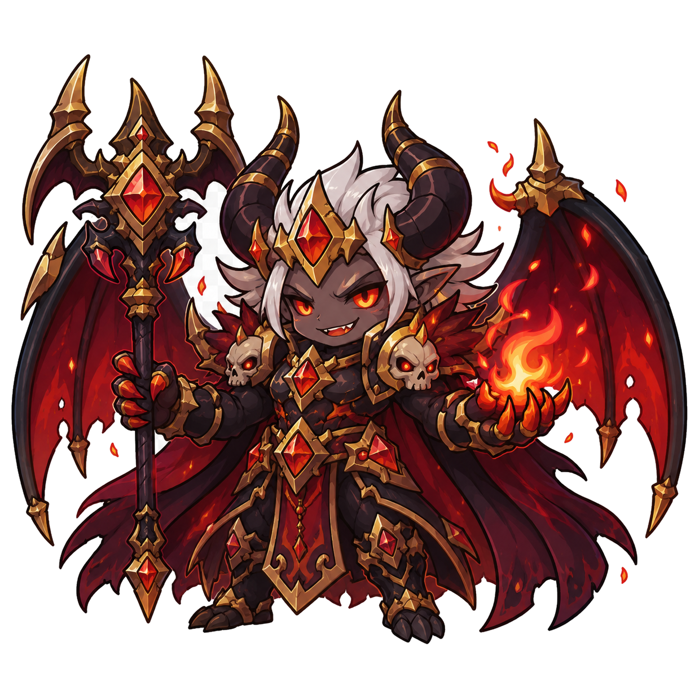
Đại Ma Vương Vuu
Vuu có ngoại hình đúng với mọi mô tả đáng sợ của Peace: sừng lớn, cánh, quyền trượng và hắc hỏa. Tuy vậy, phần lớn dáng vẻ và lời nói đều được hắn học từ biên niên sử để hoàn thành vai trò đã được định sẵn. Vuu là vật chứa cảm xúc tiêu cực của toàn lục địa, vừa có sức mạnh hủy diệt vừa là người bị tổn thương nhiều nhất bởi hệ thống.
Hệ thống thiết kế
Khung thiết kế
Tiêu chuẩn map và liên kết toàn thế giới
Mục đíchDùng cho báo cáo và triển khai game
1. Những chi tiết một khu vực hoàn chỉnh cần có
Báo cáo hiện tại đã xác định được vai trò kinh tế, quái vật chính, Boss và vai trò cốt truyện của từng vùng. Để mỗi nơi trở thành một khu vực có đời sống riêng, thiết kế cần bổ sung thêm:
- Vị trí và kết nối địa lý: Khu vực nằm ở đâu, nối với vùng nào, người dân mất bao lâu để đi qua.
- Khí hậu và nhịp thời gian: Thời tiết, ánh sáng, mùa hoạt động mạnh nhất và sự thay đổi ngày - đêm.
- Địa hình nhận diện: Đồng cỏ, hẻm núi, cảng biển, rừng, công trình hoặc địa danh nhìn thấy là nhận ra ngay.
- Cư dân và cộng đồng: Ai sinh sống tại đây, mật độ dân cư và mối quan hệ giữa người, quái vật, tinh linh.
- Sinh kế và kinh tế: Người dân kiếm sống bằng gì, xuất khẩu gì, phụ thuộc vào vùng nào.
- Lối sống hằng ngày: Thời gian thức dậy, làm việc, nghỉ ngơi, cách đi lại và cách ứng phó với nguy hiểm.
- Văn hóa: Trang phục, thức ăn, lễ hội, phong tục, niềm tin, cách chào hỏi và điều cấm kỵ.
- Kiến trúc và vật liệu: Hình dáng nhà cửa, vật liệu xây dựng và cách công trình thích nghi với môi trường.
- Quản lý và luật lệ: Ai điều hành vùng đất, vai trò của Vương quốc Peace và Công Hội Mạo Hiểm Giả.
- Hệ sinh thái: Thực vật, sinh vật hiền lành, mob săn mồi, chuỗi thức ăn và vai trò tự nhiên của chúng.
- Hành vi mob: Nơi ở, tập tính, thời gian hoạt động, dấu hiệu cảnh báo và lý do chúng tấn công.
- Nguy hiểm môi trường: Gió mạnh, sạt lở, thủy triều, sương tà, hắc khí hoặc bẫy cổ.
- Lịch sử để lại trong cảnh vật: Tàn tích, bia đá, công trình bỏ hoang và bằng chứng về Hiệp Ước Trăm Năm.
- Tình trạng trước và trong cốt truyện: Cuộc sống bình thường trông ra sao và chu kỳ Ma Vương đã làm thay đổi điều gì.
- Background ngoài map: Tranh đại diện tổng quan của khu vực trên màn hình chọn Hồi.
- Background trong trận: Các nền chiến đấu được luân phiên theo ngày và mức độ nguy hiểm.
- Âm thanh và màu sắc: Nhạc nền, âm thanh môi trường, bảng màu và hiệu ứng chuyển cảnh.
- Sự kiện ngẫu nhiên: Gặp cư dân, thương nhân, Công Hội, quái vật không thù địch, kho báu hoặc lựa chọn đạo đức.
- Tài nguyên và vật phẩm rơi: Vật liệu riêng của vùng dùng để chế tạo, nâng cấp hoặc kể chuyện.
- Vai trò trong hành trình: Điều người chơi học được, nhân vật nào phát triển và bí mật nào được hé lộ tại đây.
9. Mối liên kết kinh tế và đời sống giữa các vùng
| Khu vực | Cung cấp cho Ionie | Phụ thuộc vào | Khủng hoảng tạo ra |
|---|---|---|---|
| Breeze | Nông sản, lương thực, gia súc | Đường vận chuyển và dụng cụ | Thiếu lương thực, dân ngoại ô bị bỏ quên |
| Thảo Nguyên Gió Hát | Tuyến đường bộ, gia súc, trao đổi hàng | Trạm nước và thỏa thuận đường đi | Đứt chuỗi vận chuyển, xung đột người - Goblin |
| Hẻm Núi Pha Lê | Khoáng sản, pha lê, vật liệu trang bị | Lương thực và an toàn lao động | Thiếu trang bị, lộ bí mật khai thác |
| Bờ Biển San Hô | Hàng hải, cá, muối, hàng nhập | Tàu, thời tiết và rạn san hô | Đình trệ giao thương, tổn thương hệ biển |
| Rừng Thông Chạng Vạng | Thảo dược, cân bằng sinh thái, tri thức tự nhiên | Sự ổn định của Cây Nguồn | Tà khí lan rộng, sinh vật mất kiểm soát |
| Lâu Đài Ma Vương | Hấp thụ tà khí theo Hiệp Ước cũ | Phong ấn và vật chứa Ma Vương | Toàn bộ chu kỳ đứng trước nguy cơ vỡ |
10. Quy tắc trình bày map theo gameplay kiểu Capybara Go
Mỗi khu vực không cần một bản đồ di chuyển tự do. Thay vào đó, người chơi cảm nhận thế giới qua chuỗi ngày, background, sự kiện và quần thể mob:
- Đầu Hồi: Background sáng, cư dân sinh hoạt bình thường, mob bản địa xuất hiện với mật độ thấp.
- Giữa Hồi: Dấu hiệu khủng hoảng tăng, background có vật thể kể chuyện, mob bắt đầu xuất hiện thành nhóm hoặc biến thể nhiễm tà.
- Cuối Hồi: Không gian chuyển sang địa danh biểu tượng của vùng, thời tiết mạnh hơn và mob tinh nhuệ xuất hiện.
- Trước Boss: Có 2-3 ngày báo hiệu qua âm thanh, dấu chân, lời đồn hoặc biến đổi môi trường.
- Sau Boss: Background cho thấy hậu quả lựa chọn của người chơi, cư dân hoặc sinh vật quay lại sinh hoạt.
Mỗi Hồi nên chuẩn bị tối thiểu:
- 1 tranh đại diện khu vực.
- 3-4 background chiến đấu.
- 1 background Boss.
- 1 background sau khi hoàn thành.
- 4-7 mob bản địa, gồm mob thường, mob hỗ trợ, mob tinh nhuệ và Boss.
- 8-12 sự kiện ngẫu nhiên phản ánh lối sống địa phương.
- 3 nhóm vật phẩm rơi: tài nguyên phổ biến, vật liệu đặc trưng và vật phẩm kể chuyện.
- 1 thay đổi hình ảnh rõ ràng thể hiện chu kỳ Ma Vương đang ảnh hưởng tới vùng.
11. Điều chỉnh thư mục mob đề xuất
- Hình Hắc Long Ignis đã được chuẩn hóa thành
4-06, thuộc quần thể và Boss của Hồi 4. - Hồi 4 hiện có quần thể rừng tốt nhưng thiếu hình Elaine hoặc tinh linh bóng tối nếu muốn minh họa đầy đủ các sự kiện.
- Hồi 1 có Ong giáp và Đại bàng gió chưa xuất hiện trong danh sách kẻ địch báo cáo; nên bổ sung chúng thành mob tự nhiên để hệ sinh thái thảo nguyên đa dạng hơn.
- Hồi 2 có Nhện đá chưa xuất hiện trong danh sách kẻ địch báo cáo; nên dùng làm mob mỏ sâu và sự kiện cảnh báo hầm sập.
- Hồi 4 có Tê giác gác rừng chưa xuất hiện trong báo cáo; nên dùng như sinh vật bản địa có thể thanh tẩy thay vì quái vật hoàn toàn xấu.